git 命令之 commit
tanglijun 1月 29, 2016
git commit 命令用于将已暂存的文件存储到 git 仓库
基础用法
不带参数提交
git commit
git 会调用系统默认编辑器(或者调用你自己 配置 的编辑器)

敲击键盘 i 键，进入编辑状态，输入提交信息
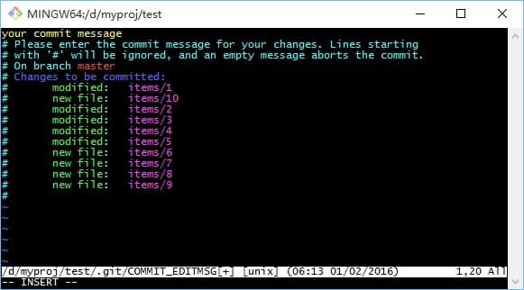
然后按键盘左上角的 Esc 键退出编辑状态，输入 :wq 保存并退出编辑器
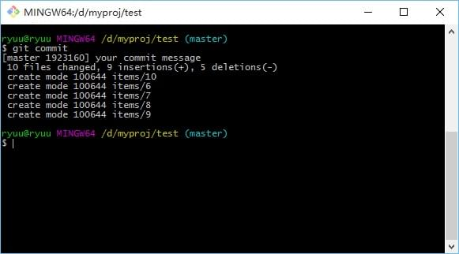
提交所有已跟踪的文件
提交所有已跟踪的文件(不包括未跟踪的文件)，使用参数 −a 或 −−all
git commit -a
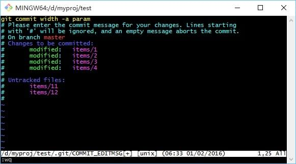 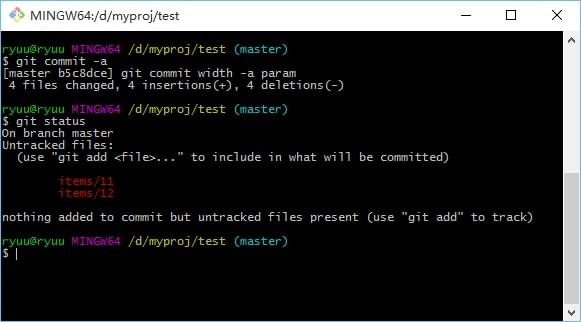
查看差异
提交时想查看一下文件差异，可以使用 −v 或 −−verbose 参数
git commit -a -v
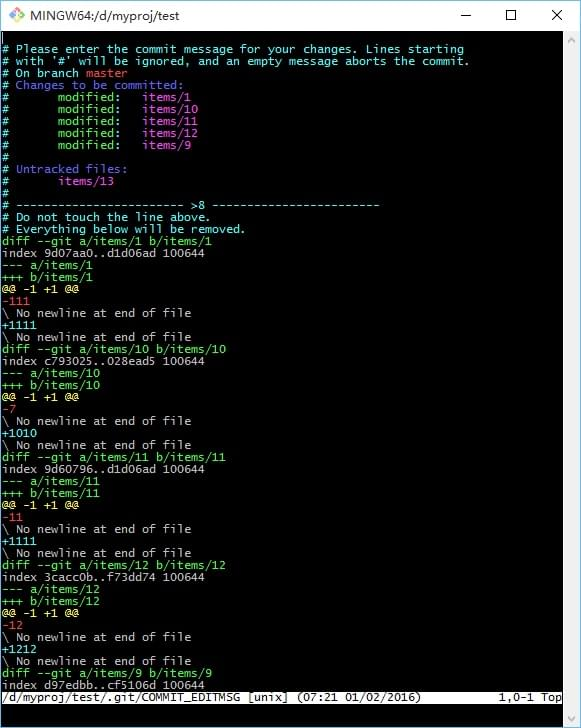
命令行中输入提交信息
如果觉得上面操作太复杂。没关系！我们可以使用参数 −m 或 −−message
git commit -a -m 'your commit message'
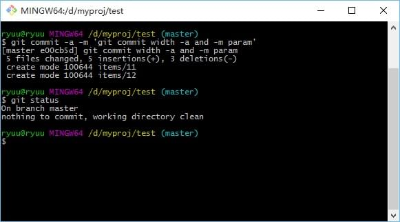
查看可提交信息
使用参数 −−dry−run
git commit --dry-run
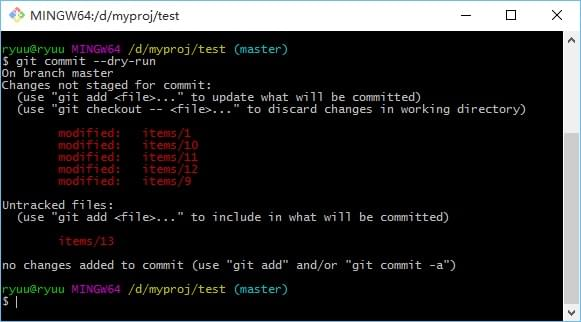
太长？没关系，有 −−short
git commit --dry-run --short
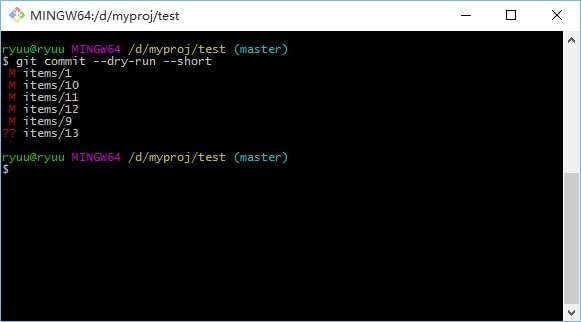
−−short 后还可以跟 −−branch 显示当前分支
git commit --dry-run --short --branch
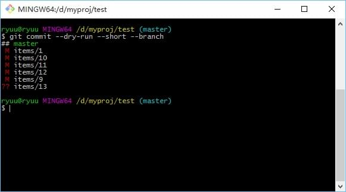
更多用法
我们使用在命令后跟上参数 −h 查看更多关于 git commit 的用法
git commit -h
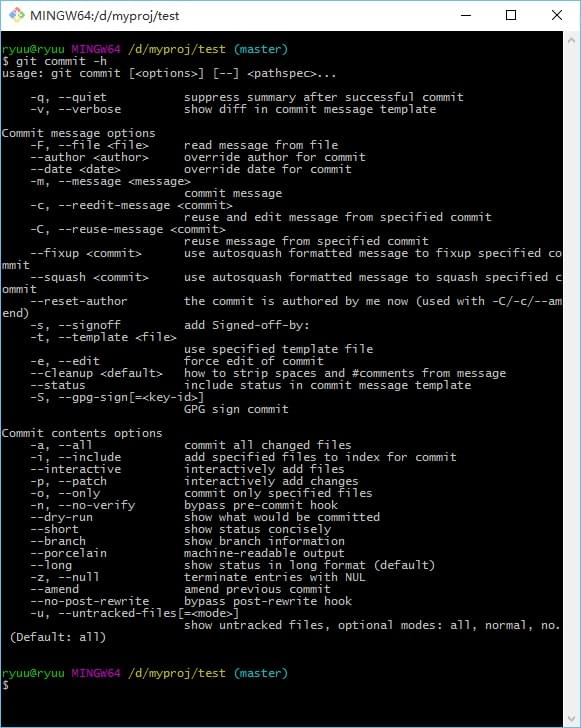
或者使用 git help commit 命令
git help commit
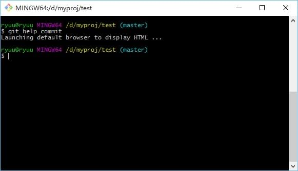 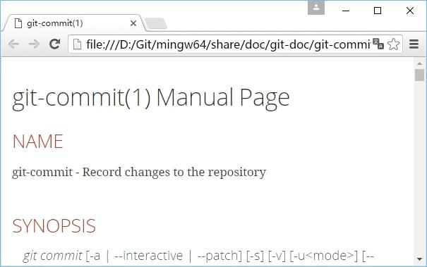
参考资料
许可协议：署名-非商业性使用-相同方式共享 4.0 国际 (CC BY-NC-SA 4.0)
本文链接：https://tanglj.cn/2016/01/29/git-command-commit/